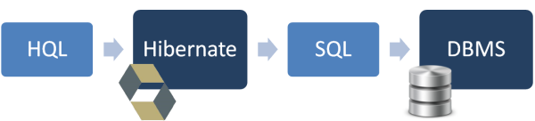

Hibernate utiliza un lenguaje de consulta potente (HQL, Hibernate Query Language) que se parece a SQL. Sin embargo, HQL es completamente orientado a objetos y comprende nociones como herencia, polimorfismo y asociación.
Las consultas se escriben en HQL y Hibernate se encarga de convertirlas al SQL usado por la base de datos con la que estemos trabajando y ejecutarla para realizar la operación indicada.
HQL es case-insensitive, o sea que sus sentencias pueden escribirse en mayúsculas y minúsculas. Por lo tanto "SeLeCt", "seleCT", "select", y "SELECT" se entienden como la misma cosa. Lo único con lo que debemos tener cuidado es con los nombres de las clases que estamos recuperando y con sus propiedades, ahí si se distinguen mayúsculas y minúsculas. O sea, en este caso "pruebas.Hibernate.Usuario" NO ES LO MISMO que "PrueBAs.Hibernate.UsuArio".
Entre las características más importantes de HQL:
- Soporte completo para operaciones relacionales: HQL permite representar consultas SQL en forma de objetos. HQL usa clases y atributos o propiedades en vez de tablas y columnas.
- Regresa sus resultados en forma de objetos: Las consultas realizadas usando HQL regresan los resultados de las mismas en la forma de objetos o listas de objetos, que son más fáciles de usar.
- Consultas Polimórficas: Podemos declarar el resultado usando el tipo de la superclase e Hibernate se encargara de crear los objetos adecuados de las subclases correctas de forma automática.
- Soporte para características avanzadas: HQL contiene muchas características avanzadas que son muy útiles y que no siempre están presentes en todas las bases de datos, o no es fácil usarlas, como paginación, fetch joins con perfiles dinámicos, inner y outer joins, etc. Además soporta proyecciones, funciones de agregación (max, avg), y agrupamientos, ordenamientos, y subconsultas.
- Independiente del manejador de base de datos: Las consultas escritas en HQL son independientes de la base de datos (siempre que la base de datos soporte la característica que estamos intentando utilizar.